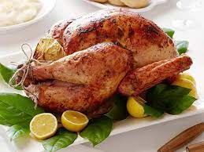

Description
Love crispy skin on roast turkey at Christmas?
You'll be fan of this recipe, which uses storecupboard ingredients
to make a festive favourite even more special. How to cook a perfect
Roast Turkey without brining this holiday season!Dried out breasts
and meat are a thing of the past with our perfect Turkey Recipe.
Slathered with a garlic herb butter then oven roasted
to get the most perfect, juicy meat and golden brown skin.
Ingredients
- Deselect All
- 1/4 pound (1 stick) unsalted butter
- 1 lemon, zested and juiced
- 1 teaspoon chopped fresh thyme leaves
- 1 fresh turkey (10 to 12 pounds)
Kosher salt
- Freshly ground black pepper
- 1 large bunch fresh thyme
- 1 whole lemon, halved
- 1 Spanish onion, quartered
- 1 head garlic, halved crosswise
Direction
- Preheat the oven to 350 degrees F.
- Melt the butter in a small saucepan. Add the zest and juice of
the lemon and 1 teaspoon of thyme leaves to the butter mixture.
Set aside.
- Take the giblets out of the turkey and wash the turkey inside and out.
Remove any excess fat and leftover pinfeathers and pat the outside
dry. Place the turkey in a large roasting pan. Liberally salt and
pepper the inside of the turkey cavity. Stuff the cavity with the
bunch of thyme, halved lemon, quartered onion, and the garlic.
- Brush the outside of the turkey with the butter mixture and sprinkle
with salt and pepper. Tie the legs together with string and tuck the
wing tips under the body of the turkey.
- Roast the turkey about 2 1/2 hours, or until the juices run clear
when you cut between the leg and the thigh. Remove the turkey to a
cutting board and cover with aluminum foil; let rest for 20 minutes.
Slice the turkey and serve.
Return to top